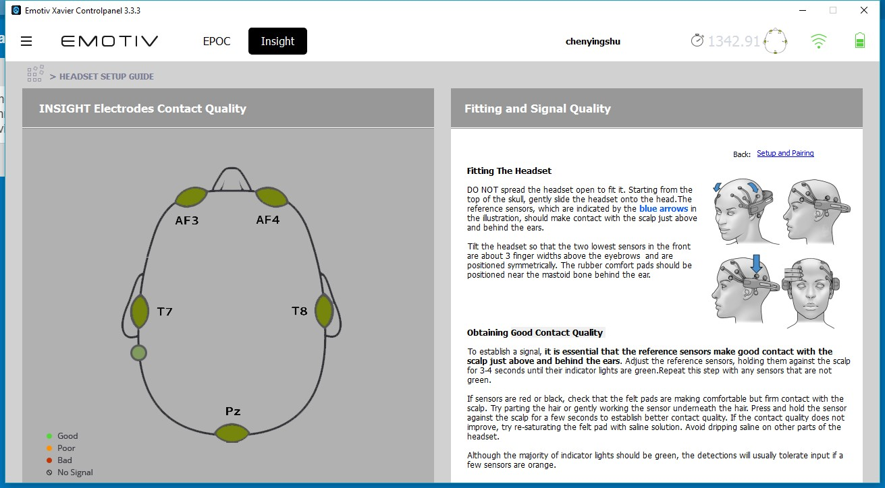
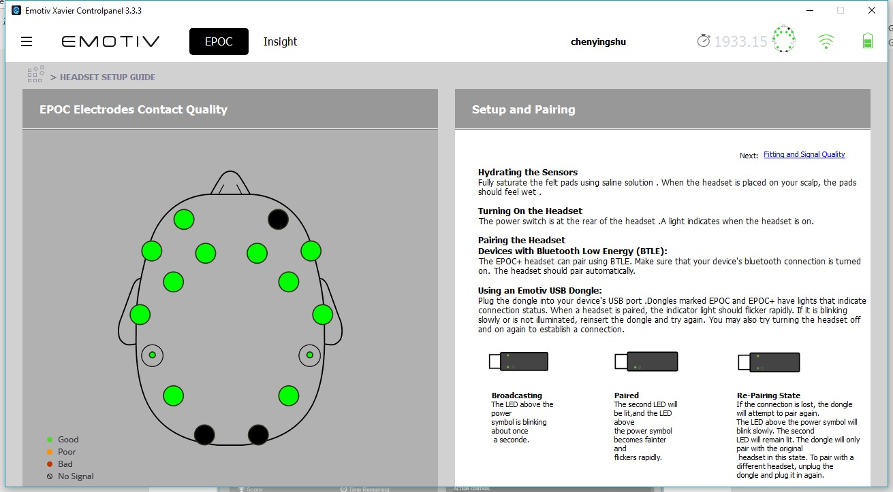
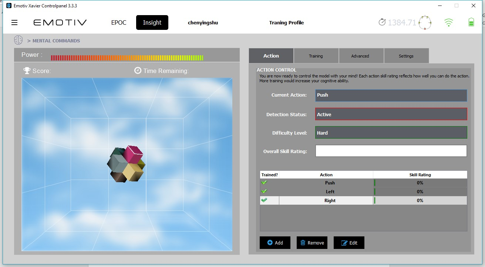
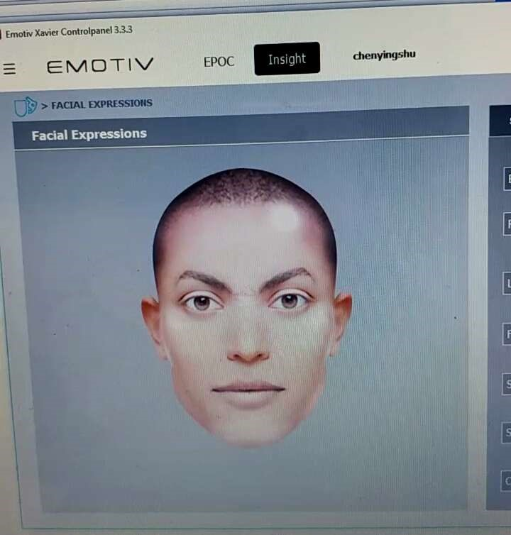
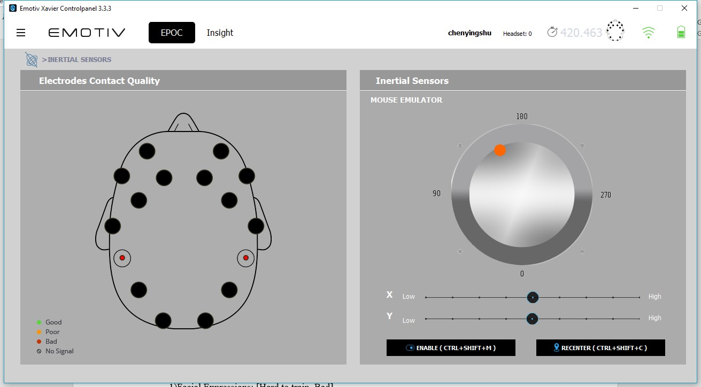
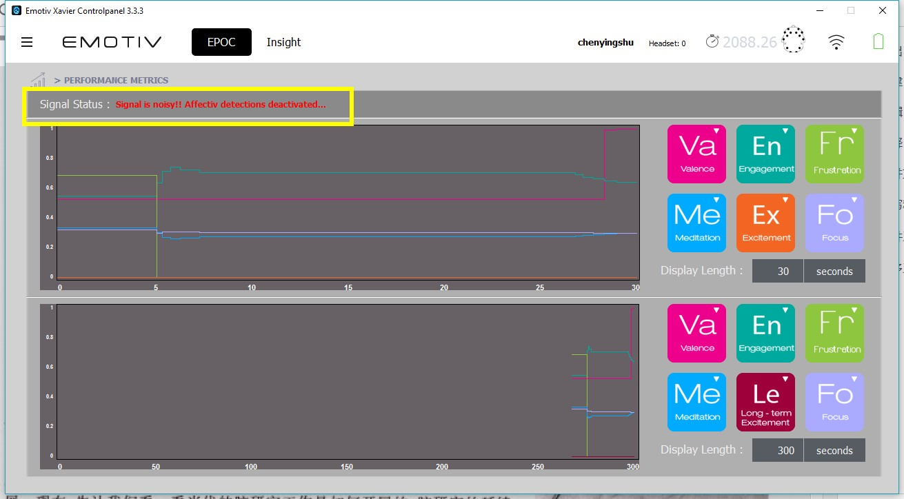

Test Platform: Windows 10
Insight:

*Not sensitive for all sensors (Solved)
*Easy to lose connection (Bluetooth) (Solved, charge enough, charge to activate)
EPOC+:

*Tested with USB dongle.
*Hard to connect well, and the best statue is still connected intermittently.
*Sensors need fully hydrated. (As shown above, left sensors are more hydrated than right ones)
*Need half an hour to connect and keep closely touching scalps, especially sensors that near ears.
*Rear two sensors are hard to activated.
*Wear firmly or loose contact. Surface of sensors should be fully touched with scalp.
TESTS:
TEST 1 Mental Commands

*If only command by thinking, it is not easy to tell the differences.
*Cannot detect Glance left, Glance right, Laugh, Smirk (left side), Smirk (right side)
*Thinking dynamic actions is better detected than thinking static ones.
* More engagement is better detected and differentiated.
***Instructions from official site: https://emotiv.zendesk.com/hc/en-us/articles/201222435-How-do-I-train-multiple-actions-
Master one action and then another one. Neutral state to be relaxed and act naturally.
Acting is easier to be detected than thinking.
TEST 2 Facial expression

*Work badly, little response. With better training, it responses better and more precisely.
*It can detect expressions like smile, frown, blink, clench, surprise to some extent.
**If change the headset like EPOC, the trained data for Insight are not available for EPOC.
TEST 3 Inertial Sensor

*Orientation detection, movement detection is good. (detect the acceleration)
*Good detection even with bad connect quality. (as figured showed below)
TEST 4 Performance Metrics

OTHER TESTS:
It can record and display MyEmotiv training records and reports.